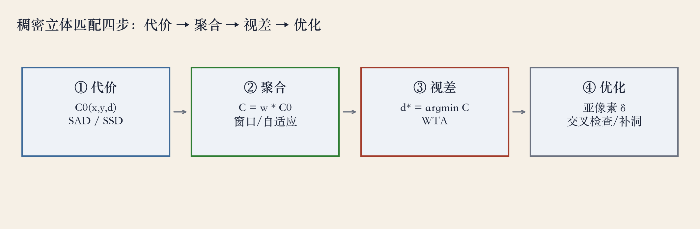
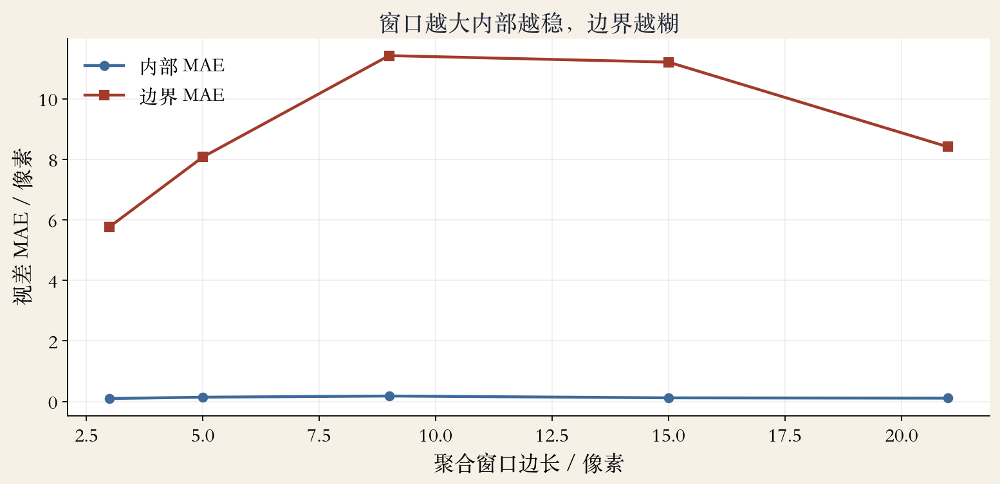
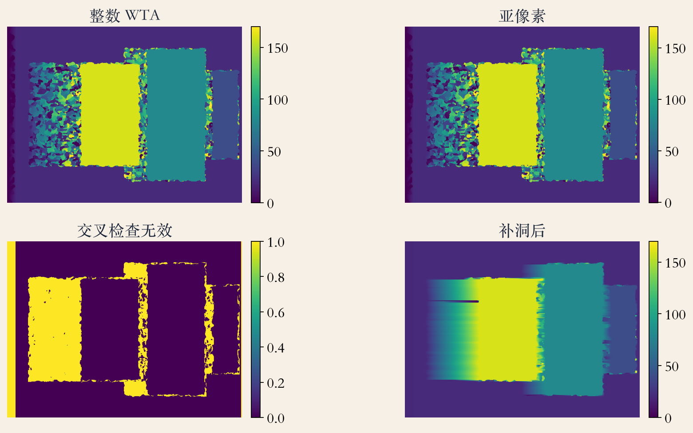

四步 · 流水线
稠密匹配拆成四步
书上第 762 页：稠密对应通常做四步里的若干步。
代价、聚合、视差计算与优化、视差细化。
四步是可替换的零件，换一个就换一种算法。
全局法跳过聚合，深度网络可以合并几步。
依据：原书第 762–763 页
四步在问什么
代价：这两个像素像不像
聚合：周围一小块像不像
视差：哪个 d 最像
细化：更准、哪里不可信
正课第一百零四集
01 / 13
第一步 · 匹配代价
代价：像素像不像
书上第 764 页：最常见的像素代价是平方差和绝对差 SAD。
绝对差对异常值不敏感，平方差会放大大的差异。
两个都在灰度上算，光照一变就受影响。
第 765 页：census 把邻居和中心比大小，编成位向量。
依据：原书第 764–765 页
三种代价
绝对差：|I_L−I_R|
平方差：把 10 与 1 的差从 9 拉到 81
census：抗大幅曝光变化
正课第一百零四集
02 / 13
看图 · 从 DSI 到视差
四步走一遍：从 DSI 到视差
第 763 页用平方差举例：先算每个视差的平方差。
再在固定视差的窗口里求和，选聚合代价最小的视差。
把所有视差的代价堆起来，就是视差空间图 DSI。
我们 640×480、搜索 0 到 170，DSI 有 171 个候选视差。
依据：原书第 763 页；本集实验

四步流水线：代价、聚合、视差、细化｜程序生成，未用教材或论文原图
正课第一百零四集
03 / 13
第二步 · 代价聚合
聚合：窗口越大越稳，也越糊
第 766 页：局部法在 DSI 上按支持区域求和或平均。
支持区可以是固定视差的二维窗口，也可以是三维支撑。
窗口要大到含足够纹理，又要小到不跨深度不连续。
可移动窗口、自适应窗口、双边加权、分割区域都在找平衡。
依据：原书第 766 页
工程做法
大窗口：弱纹理更稳
大窗口：边界更容易混深度
box filter：积分图 O(1)
正课第一百零四集
04 / 13
第三步 · 视差计算
WTA：只在参考图里唯一
第 768 页：局部法选聚合代价最小的视差，叫 WTA。
WTA 只在参考图里保证唯一。
另一张图的一个点可能被多个点匹配，遮挡区尤其如此。
第 769 页：遮挡区可以用左右一致性检查找出来。
依据：原书第 768–769 页
WTA 的后果
唯一：只在参考图
遮挡：一对多
双谷：重复纹理和弱纹理
正课第一百零四集
05 / 13
第四步 · 视差细化
细化：亚像素、去孤立点、补洞
第 768 页：先得整数视差，再做亚像素细化。
抛物线拟合：用 d−1、d、d+1 三个代价，顶点就是偏移。
第 769 页：交叉检查找遮挡，中值滤波清孤立错误。
表面拟合或邻域分布补洞；补洞不增加真实观测。
依据：原书第 768–769 页
细化三件事
亚像素：拟合代价曲线
去孤立点：中值滤波
补洞：表面拟合或邻域分布
正课第一百零四集
06 / 13
实验 · 窗口大小
看图：窗口不是越大越好
3×3 内部误差 0.099 像素，9×9 是 0.182，21×21 是 0.111。
边界误差从 3×3 的 5.77 涨到 9×9 的 11.43。
21×21 的边界误差比 9×9 小一点，是合成纹理的平均压住了。
合成纹理够强，小窗口就够用；真实弱纹理才需要大窗口。
依据：本集实验

窗口取舍：合成高频纹理上小窗口内部更准，大窗口边界更差｜程序生成，未用教材或论文原图
正课第一百零四集
07 / 13
实验 · 合成双目
设置：四层深度加遮挡
640×480 合成双目，四层深度 1、2、4、8 场景单位。
视差 160、80、40、20 像素，左右图加遮挡。
绝对差和平方差都用 9×9 窗口，再换 3、5、9、15、21。
统计剔除遮挡和深度边界，共用同一对图像和掩码。
依据：本集实验
实验矩阵
代价：绝对差 / 平方差
窗口：3、5、9、15、21
后处理：亚像素、交叉检查、补洞
正课第一百零四集
08 / 13
看图 · 交叉检查与补洞
看图：标出不可信，再补洞
左上整数 WTA，右上亚像素，左下交叉检查，右下补洞。
交叉检查把遮挡区大面积标出，非遮挡区几乎没有误标。
遮挡区错误率 94.3%，非遮挡区 0.2%，补洞覆盖 97.3%。
补洞只填合理值，遮挡区的深度仍然没有观测。
依据：本集实验

整数/亚像素/交叉检查/补洞：遮挡区被标出，补洞只填合理值｜程序生成，未用教材或论文原图
正课第一百零四集
09 / 13
实验 · 读数
结果：SAD 0.182，SSD 0.299
SAD 9×9 平均误差 0.182 像素，平方差 9×9 是 0.299。
SAD 不被大差异主导，1 像素内准确率 99.8%。
亚像素这次是 0.202，比整数 0.182 差 0.02。
真值本来就是整数视差，尖锐纹理上拟合会被噪声带偏。
依据：本集实验
读数
SAD：0.182 像素
SSD：0.299 像素
亚像素：0.202 像素
1 像素内：99.8%
正课第一百零四集
10 / 13
失败边界
五种会出错的情况
弱纹理代价曲线很平，WTA 随便选一个。
重复纹理会出多个同样低的峰。
遮挡区没有对应像素；镜面、曝光、运动模糊破坏亮度。
深度不连续处窗口跨两个面；要组合手段并标出不可信。
依据：原书第 766/768–769 页；工程经验为本集整理
组合手段
census / 互信息：抗曝光
自适应窗口：保边界
交叉检查 + 中值 + 补洞
正课第一百零四集
11 / 13
工程选型
选型：先看场景缺什么
实时、纹理强：绝对差或平方差加小窗口就够。
曝光变化大：用 census 或互信息。
弱纹理多：更大窗口、自适应权重或全局法。
第 763 页：SGM 介于局部和全局之间，用一维优化近似二维代价。
依据：原书第 763 页；本集工程经验
按场景选
实时强纹理：小窗口
曝光差：census / 互信息
弱纹理：大窗口或全局法
正课第一百零四集
12 / 13
收束 · 下一集 SGM
总结：四步和三个坑
稠密匹配是代价、聚合、视差、细化四步，零件可换。
窗口大小是弱纹理稳定和边界准确之间的取舍。
WTA 只保证参考图唯一，遮挡靠左右一致性检查。
补出来的值不是真值；下一集讲 SGM。
依据：原书第 762–769 页；本集实验
三个坑
弱纹理
遮挡
边界
正课第一百零四集
13 / 13